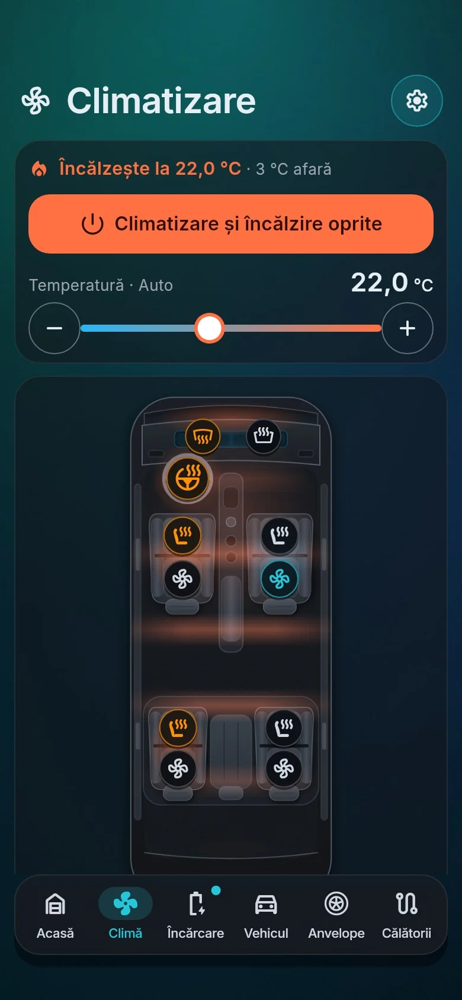
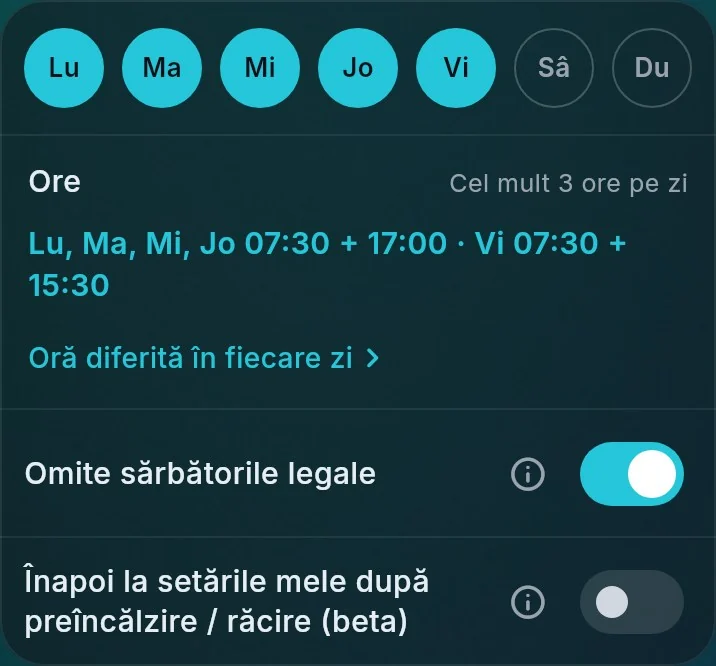
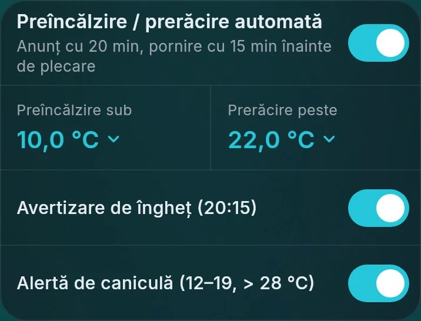

Toate funcțiile
Preîncălzire inteligentă
O mașină caldă în fiecare dimineață. Răcoroasă vara.
Spune-i lui Carmeo când pleci. Verifică prognoza și pornește climatizarea exact la timp – doar în zilele în care e nevoie.


Setezi plecările o singură dată.
Alegi ora plecării pentru fiecare zi a săptămânii – chiar și două pe zi, pentru drumul spre serviciu și cel spre casă. Sărbătorile legale sunt sărite.

Vremea decide.
Sub 10 °C Carmeo încălzește habitaclul, peste 22 °C îl răcește, iar între ele lasă mașina în pace. Ambele praguri le setezi tu.
- Un anunț cu 20 de minute înainte – nu conduci azi? Atinge Omite azi.
- Pornește cu 15 minute înainte de plecare – cu temperatura, încălzirea scaunelor și a volanului și dezaburirea alese de tine.
- Avertizări de îngheț și de caniculă – un mesaj înaintea unei nopți cu îngheț și unul când mașina stă în căldură.


Numărătoarea inversă te însoțește.
Ecranul principal arată minutele până la plecare și ce face mașina. Pe iPhone, numărătoarea rulează și ca Live Activity pe ecranul de blocare și în Dynamic Island.
Încearc-o pe mașina ta.
Carmeo este gratuit. Intră în grupul de testare deschisă pe iPhone sau Android.